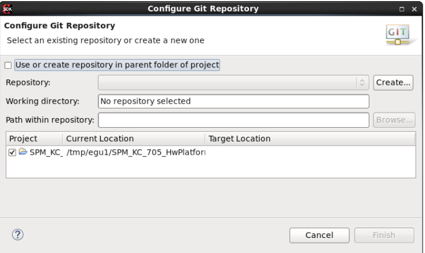
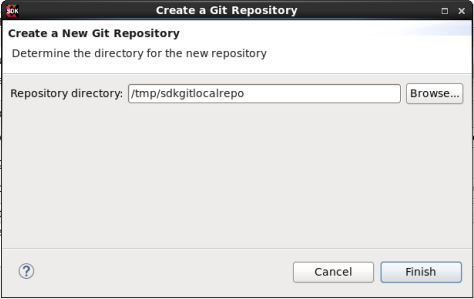

Working with Git
This section explains the usage of the distributed version control system Git with Xilinx SDK. If you're new to Git or distributed version control systems generally, refer Git for Eclipse UsersGit for Eclipse Users.
Important: You should have a Git account prior to working with instructions provided in this section. A Git account is also required to share projects amongst team members.
- Create a local directory, where you would like to create workspaces. For example, /tmp/sdkgitlocalrepo.
- Launch SDK and when prompted, create a workspace within the newly created local directory. For example, /tmp/sdkgitlocalrepo/workspace1.
- Create a new project or select an existing project to upload it into the remote or local Git repository.
- Right-click on the project, in the Project Explorer view and select Team > Share project, from the context menu that appears.
-
To configure the GIT repository, select the Use or create repository in
parent folder of project in the Configure GIT
Repository dialog box.

-
Select your project and change the path up to the repository location.

- Click Create Repository.
-
If your project already resides in the working tree of an existing Git repository, the repository is chosen automatically. Alternatively, for new projects, click Create to initialize a new Git repository for the selected project.
The Create a New Git Repository dialog box appears.

- Click Browse or specify a directory for the new repository.
-
Click Finish to create the specified repository directory and close the Create a New Git Repository dialog box.
The decorator text enclosed within the square brackets [ ] suffixed to the project name shows that this project is tracked in a repository on the specified branch and the question mark decorators show that the .classpath and .project and the .settings files are not yet under version control.
-
Select Team > Add to Index in the project context menu.
The + decorators show that now the project's files have been added to version control.
-
Select Team > Commit in the project context menu. The table below lists the files that are recommended to be uploaded to Git.
Files Git Action HW files hdf Check-in apmconfigs Check-in atgconfigs Check-in debug, run and performance configuration files Check-in SPM project executables folder Check-in Performance data project Check-in Use design performance project Check-in Other files in HW Optional BSP Projects lib and include Not Required Other files Check-in Application Other than build output folder (release, build) Optional src Check-in -
Enter a commit message explaining your change, the first line (followed by an empty line) will become the short log for this commit. By default, the author and committer are taken from the .gitconfig file in your home directory.
Note: If you are committing the change of another author you may alter the author field to give the name and email address of the author.
- Click Commit to commit your first change. Committing saves the changes in the local GIT repository.
-
Select Team > Push branch master, in the project context menu.
The Push Branch dialog box appears.
- Specify the remote Git repository details in the Push Branch dialog box.
- Click Finish to push updates to the remote GIT repository.